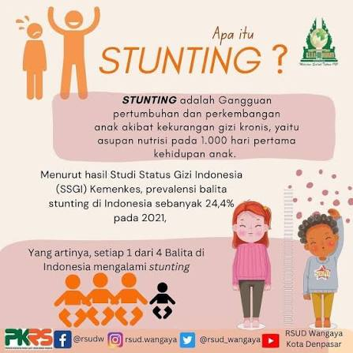
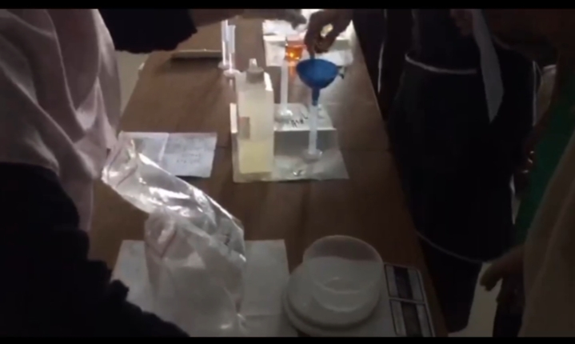
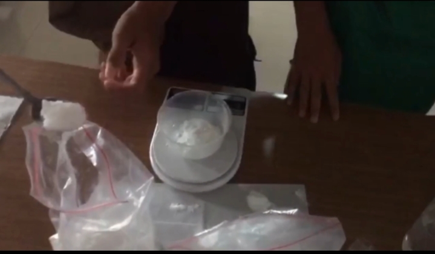
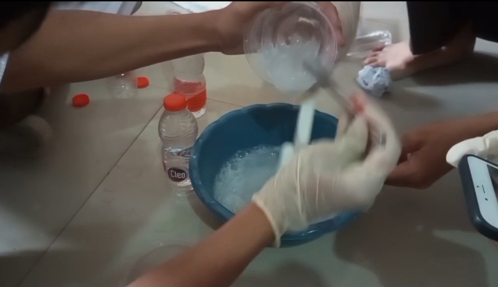
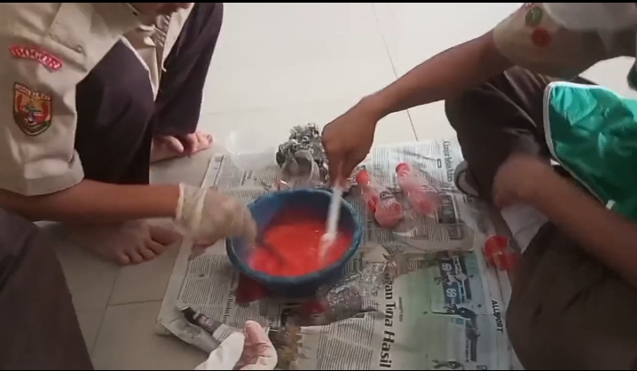
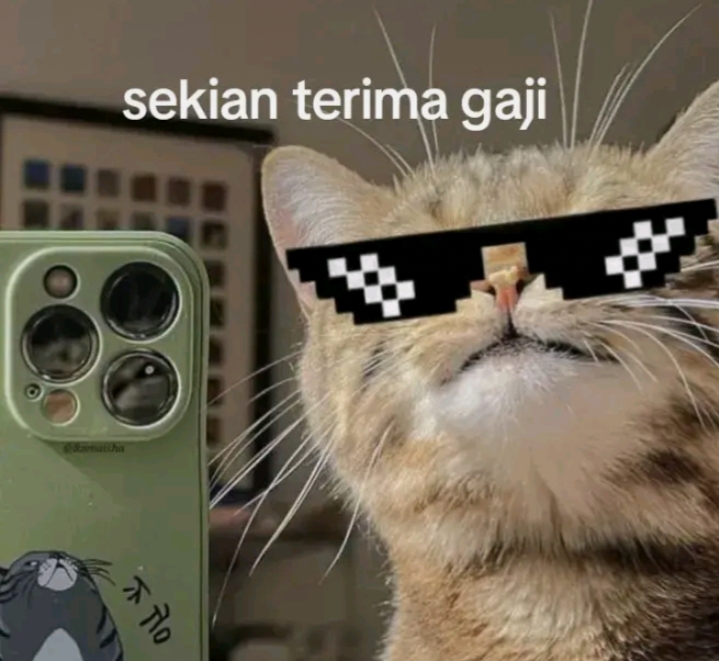

Stunting adalah kondisi gagal tumbuh pada anak akibat kekurangan gizi dalam waktu lama sehingga tinggi badan anak lebih pendek dari normal.
Stunting dapat menyebabkan gangguan pertumbuhan, kesehatan yang buruk, dan kemampuan belajar yang menurun.










Intinya simpel: kebersihan. Kaitannya: Cuci tangan pakai sabun → kuman mati. Sabun bunuh bakteri, virus, parasit yang nempel di tangan. Kalau tangan kotor → gampang kena penyakit. Contoh: diare, cacingan, infeksi pencernaan. Anak yang sering sakit → nutrisi tidak terserap baik. Makanan masuk, tapi tubuh lagi sibuk lawan penyakit. Nutrisi kurang terus → bisa bikin stunting. Jadi rantainya gini: Tidak cuci tangan → kuman masuk → sering sakit → nutrisi terganggu → risiko stunting naik.
